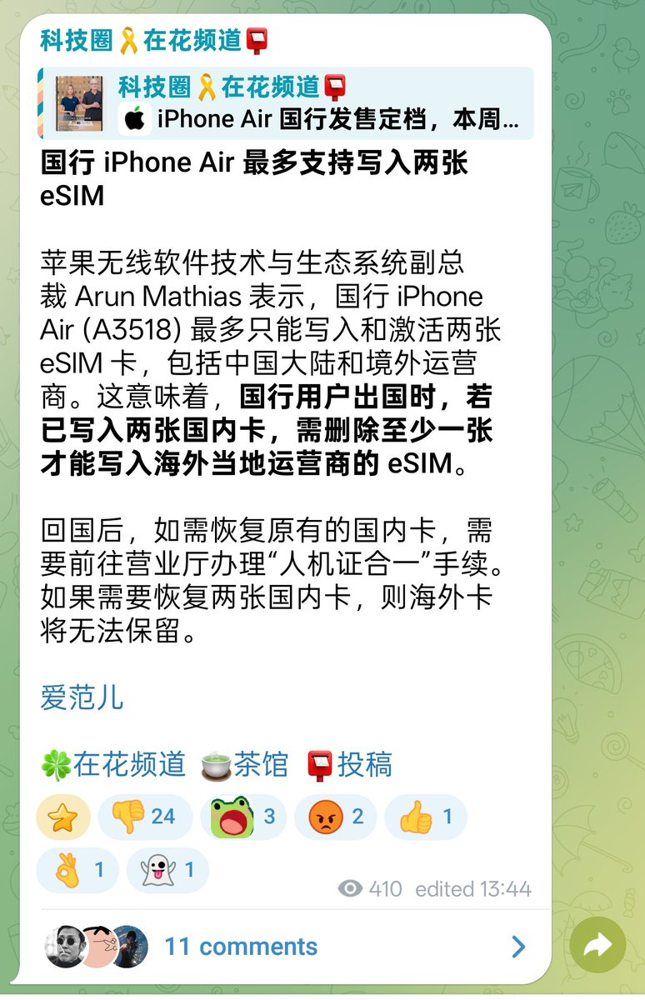

奶昔🥤
@realNyarime
@safaricheung 你要知道这是把双卡双待功能带到无卡手机上的一大壮举，这是革命性的突破，领导还等着这个邀功呢

safari
@safaricheung
国行 iPhone Air eSIM 居然总量只支持写入两张 eSIM 啊😦
目前来看 eSIM 最重要的优势: 几乎可以无限量的存储 eSIM 这一点在国行 iPhone Air 上几乎不存在了，不知道未来是不是所有国行 eSIM 手机都会是这样。 https://t.co/XEvz7KaC0g